Section 6.1 Setup
When you get your CPX and plug it into the computer via USB it actually won’t run Python just yet. First you need to double click the reset button (the button in the center. It says RESET above the button) and put it into boot mode. All the neopixels (the ring lights on the CPX) will light up green.
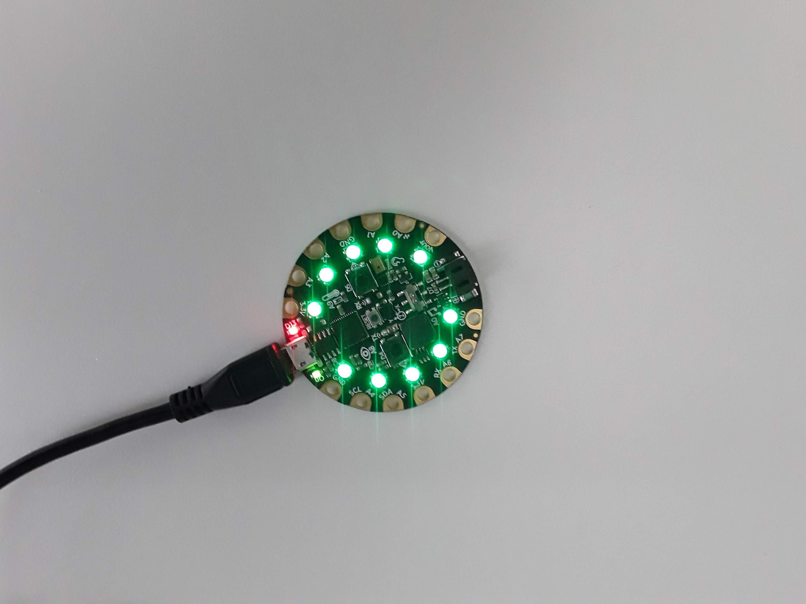
Something called CPLAYBOOT will pop up on your computer just like a USB stick or external harddrive. A couple files with be in there but it doesn’t matter what they say right now.
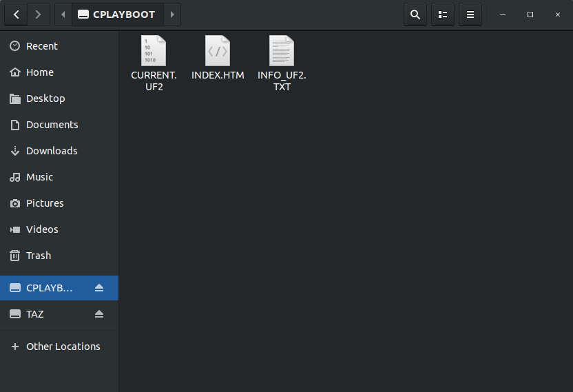
You then need to download what’s called a UF2 file and transfer it onto the CPX. Note if you purchased a kit with the Bluefruit you need to download a different UF2[30]. Make sure you get the right one. Once the UF2 is downloaded you need to drag the UF2 over to the CPLAYBOOT drive on your computer. After a bit of time a USB drive called CIRCUITPY will pop up as a flash drive on your computer. The CPX is now like a USB stick with 2MB of storage. Note that if you have an old bootloader you must update the bootloader [32].
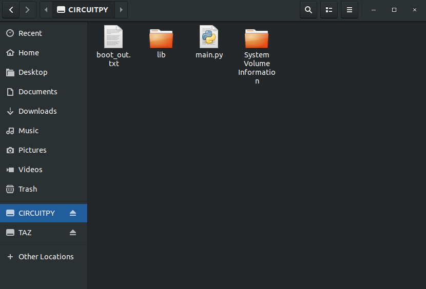
At this point the CPX is like a mini computer. If you put Python code on the “flash drive” it will run python code. Since I’ve done this before, there are a number of files already on my CPX. You may have some or none of these. The “boot_out.txt” file will tell you the version of CircuitPython you have on the CPX. Mine says this:
Adafruit CircuitPython 5.3.0 on 2020-04-29; Adafruit CircuitPlayground Express with samd21g18
Which means I have CircuitPython version 5.3.0 last updated on April 29th, 2020. The CPX itself is using the ATSAMD21G18 microprocessor [55]. The folder lib is a folder with extra libraries that you may need to install later. The file main.py is the Python file that the CPX is currently running. The CPX can store as many Python files as possible for a 2MB flash drive but it will only run ONE Python script at a time and that file must be named main.py The folder System_Volume_Information is a file management folder that we will never use.
If you want the CPX to run code you simply need to edit the file main.py or if that file does not exist you just need to create it. You could just open Notepad or any other text app (Sublime,TexWrangler, Emacs, Vi, Nano, Gedit, Notepad++, Wordpad, VSCode, etc) but the CPX has alot of debugging options and it is recommended to use a program called “Mu”[54]. Mu is a good way to write and debug code on the CPX. Note that Mu is only used to program the CPX. If you want to run Python code on your laptop you need to use Thonny or Spyder (or whatever other IDE you downloaded). If you want to run Python code on your CPX you must use Mu. Once you’ve downloaded and installed Mu and open it up it will look like this (Note it’s possible the the software gets updated from the time this book is published. As such be sure to select the Circuitpython Mode for board development).
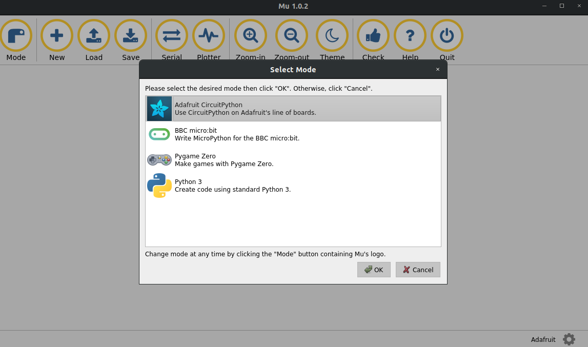
Make sure to select the “Adafruit CircuitPython” option. If the software has been updated and that option no longer exists, be sure to select the option that says Circuitpython for board development.
Alright, let’s start writing code! If you have a file called main.py on your CPX click the Load button and load main.py (make sure to load the main.py that is stored on your CPX and not somewhere else on your computer.) If a file main.py does not exist on your CPX simply click the New button and then Save the file as main.py (again make sure you save it to the CPX and not to your computer)
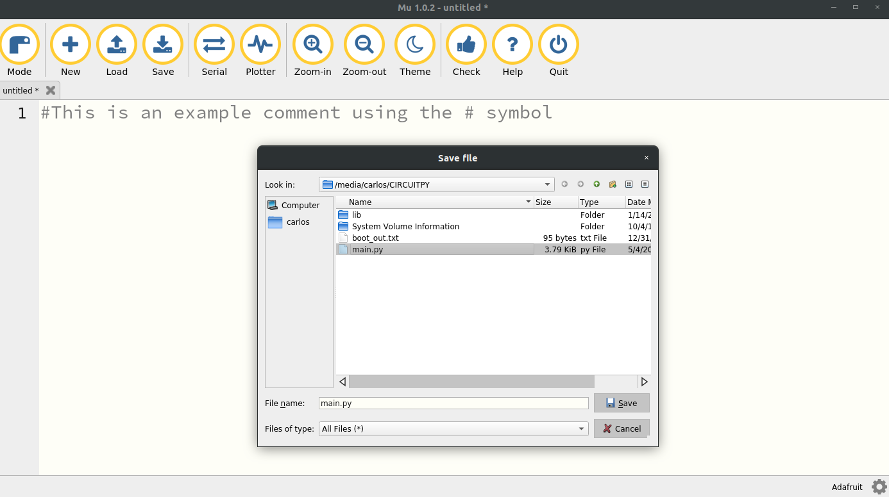
You’ll see that I am accessing the CIRCUITPY drive and saving the file as main.py The file itself is empty and just has a comment using the # symbol. At this point since the file is blank the CPX won’t do anything.
Now this is really important. Your CPX is a USB stick that can hold as many Python files as 2MB will allow but it can only run or execute one python script at a time. Furthermore it will only run two types of files. It will run code.py if it exists and if it can’t find code.py it will run main.py If the CPX can’t find main.py or code.y it will just not do anything. If you have two versions of main.py or a combination of main.py or code.py it will run one of them and not the other. Make sure you only have one version of main.py or code.by but not both! Some common things to check if your CPX isn’t working.
-
Make sure you’re using Mu in the right Mode
-
Make sure main.py or code.py is on the CIRCUITPY drive and not somewhere on your computer.
-
Make sure you are editing the right file in Mu. Do you have two versions of main.py?
-
Are you editing using Thonny or Spyder?
-
Are you editing a file on your computer? Make sure you are writing to the CIRCUITPY drive.
-
Unplug the CPX, close Mu and try again.
So let’s get the CPX to do something simple like blink an LED. I have an entire Github devoted to Microelectronics. Specifically I have a folder with all of my Circuit Playground files. The easiest program to run is the blink.py script. I’ve attached a screenshot of the script below[33].
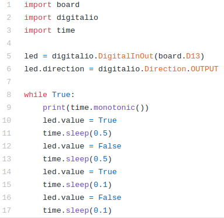
We will talk about what this code is doing later on. For now copy and paste these 17 or so lines of code and paste them into Mu specifically the main.py script. It will hopefully look like this.
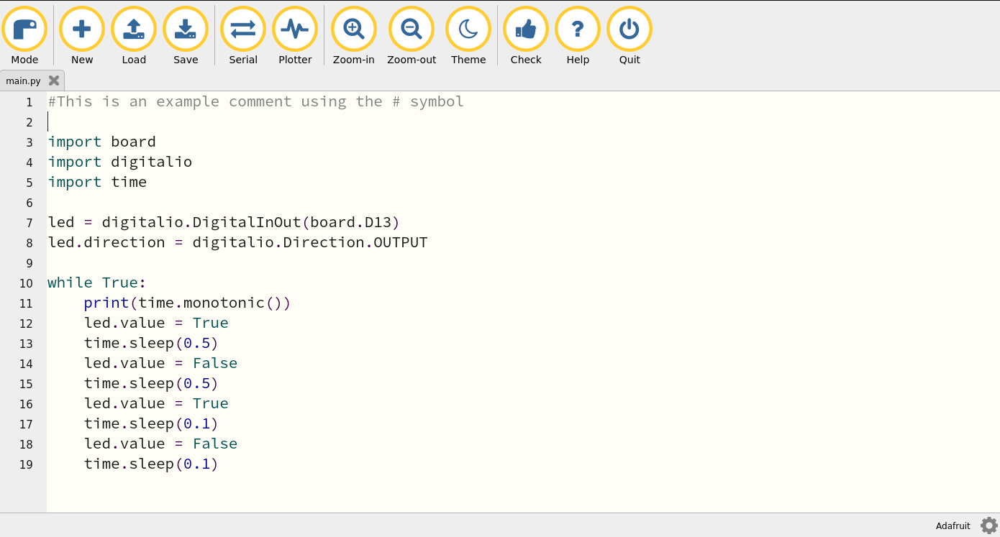
Make sure to save. You can click Zoom-In and Zoom-out to zoom in and out to change the font size and see more of the output. If the blink code is working you will see a red led labeled D13 on the CPX blink back and forth. D13 stands for digital pin 13. You’ll notice there are analog pins labeled A5 and A6 among other numbers. Let’s talk about the code a bit more and explain why it’s doing what it’s doing. The three lines at the top of the code are import commands to import different modules just like we did for numpy and matplotlib. In this case the modules being imported are board, digitalio and time. The module board is used to import the layout of the CPX so we can access different pins on the CPX. The module digitalio stands for digital input output which means we are inputting and outputting digital signals. Since we can combine this module with the board module we will be able to output digital signals to different pins on the CPX board. Remember that PCB stands for printed circuit board so board implies we are accessing pins on the CPX PCB. Hopefully that makes sense. The final module we are importing is time which acts just like the time module on your desktop computer. It will let us access the CPX’s internal clock.
Moving along, lines 7 and 8 create an LED object using the board module and digitalio. It’s a long line of code that basically says, create a variable called led that lets us output a digital signal to pin D13. We also set the direction of the LED to output since we only want to write to the LED.
Lines 10 through 19 kick off an infinite loop that never ends. The line that says while True: means loop while True. Well True is always true which means it will loop forever. The colon at the end of the line tells Python that the loop condition statement ends and to begin looping from 11 through 19.
Line 11 specifically says print(time.monotonic()). First the print() function is used to print things so that you and I can see it. Rather than just seeing a blinking LED we want to see the time printed. The time.monotonic() is using the module time which we imported and using a function from that module called monotonic() which calls the internal clock of the CPX. So how do you see the output from the print statement? Hit the Serial button on Mu and you will hopefully see some output. Here’s what it looks like on my machine.
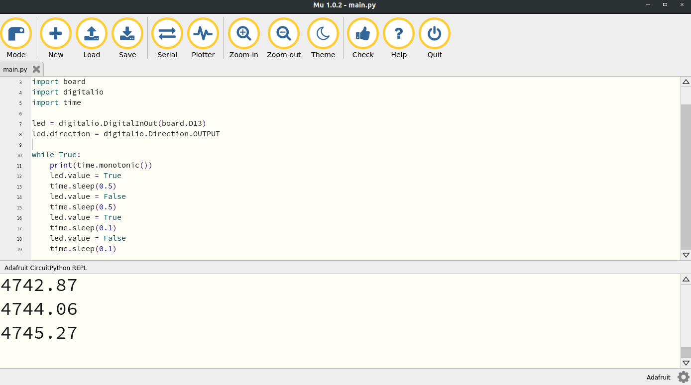
In this case you can see the time printed every time it goes through the loop. You may even see an error. This Serial button is great for debugging because it will tell you the error in your code. For example, in the picture below I have an error in my code and the Serial output is letting me know.
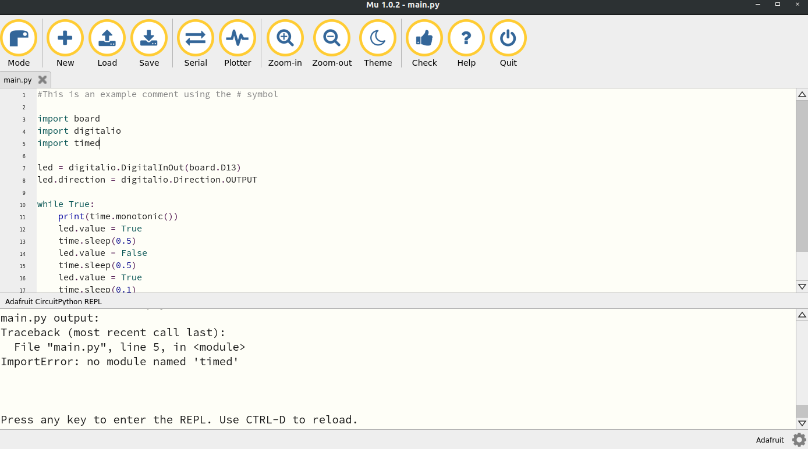
In this case I have an error on line 5. It’s saying there is no module named timed. The reason that module doesn’t exist is because the module is actually time not timed. You can use the Serial monitor to check on your program and see what errors you may have. Ok so there are two more lines of code to discuss. They are led.value = True and time.sleep(0.5).
These lines of code are repeated throughout the while loop and do two things. First, the led.value either sets the value of the LED to True which turns the light on or False which turns the light off. The LED is digital which means the signal can either be on or off. There’s no in between for digital signals. The time.sleep() function tells the CPX to pause for half a second. You can change the number in the parentheses if you want to change length of time the code pauses. Note that the CPX completely pauses. That is no code runs during a sleep.
If you’ve gotten the LED to blink you’re all set for this lab. However, I’d like to you learn a few more things about documentation. Just like Python on your desktop you can lookup the documentation on the CPX itself. For example, I’ve added a print statement to print the directory of time.
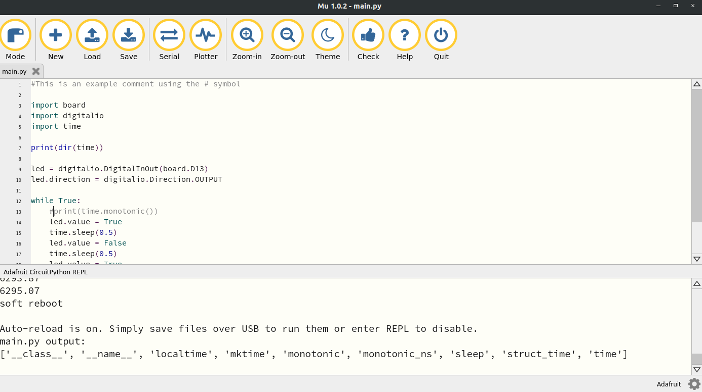
In this case I’ve added print(dir(time)) to line 7. The output shows that the time module has 9 functions including monotonic(). Unfortunately CircuitPython does not have __doc__ functions built in which means if you want to learn about a specific function, you need to visit the documentation for CircuitPython. Here’s the specific documentation for the time module. A lot of example code from the Adafruit Learning System is also on Github[30].
Finally, in order to keep practicing using Python on your desktop I want you to modify the code above to run on your desktop computer. You’re going to have to modify a few things. First, make sure to open Thonny or Spyder depending on which version of Python IDE you downloaded. Then, only import the time module. All the other modules don’t exist on your desktop. Also, get rid of all the lines of code that blink the LED. We just want to print time in a while loop. Finally, the time module on your desktop uses a function called time.time() (unless you have Python3 installed) so when you print time make sure to use that module instead. Again visit the documentation for time for Python if you want to learn more[48]. Thonny by default will load Python version 3 but it’s possible you may have Python version 2 so make sure you look up the documentation for the appropriate version of Python. After searching through the documentation you can use a function called asctime() on your desktop. This is the output I get in Thonny when I add a sleep of 1 second. The exercise for you is to do something similar.
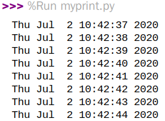